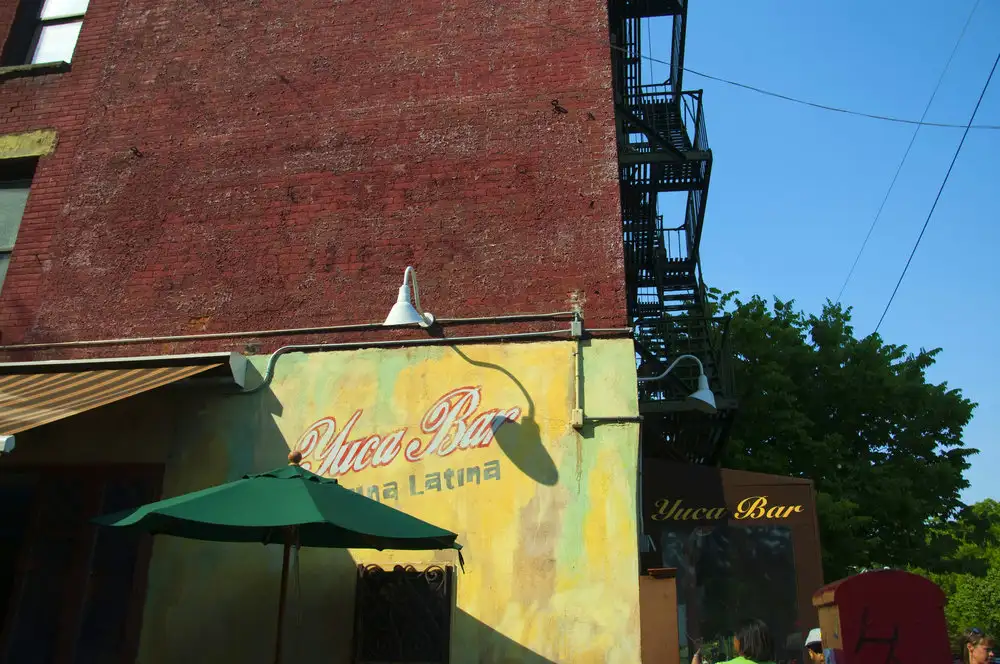
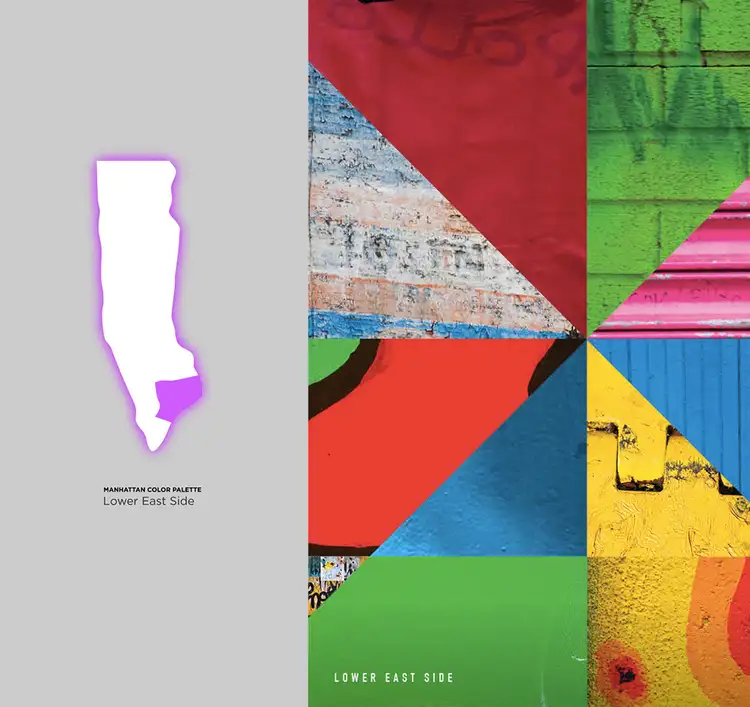
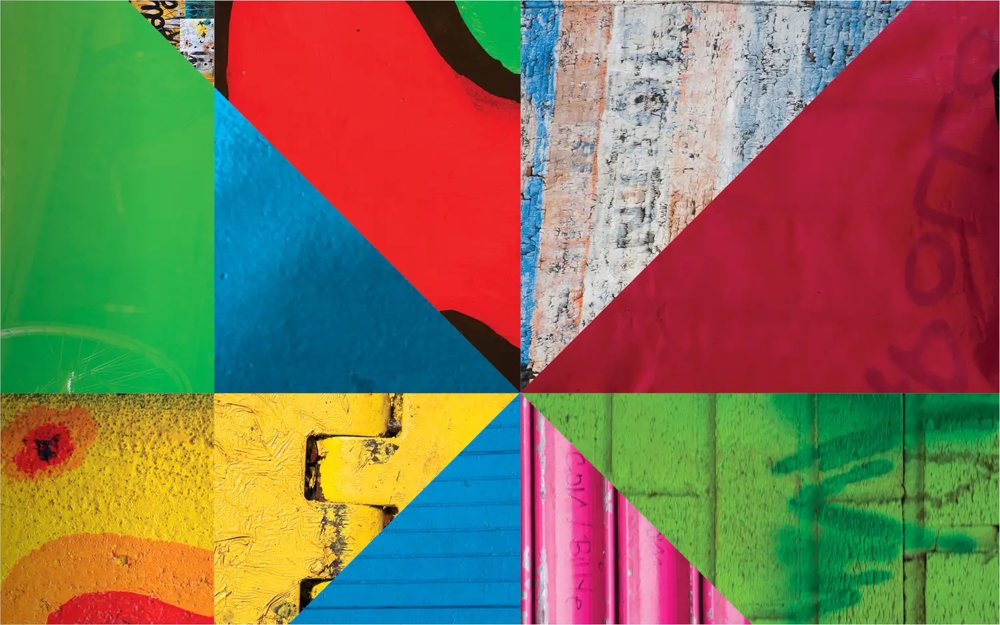
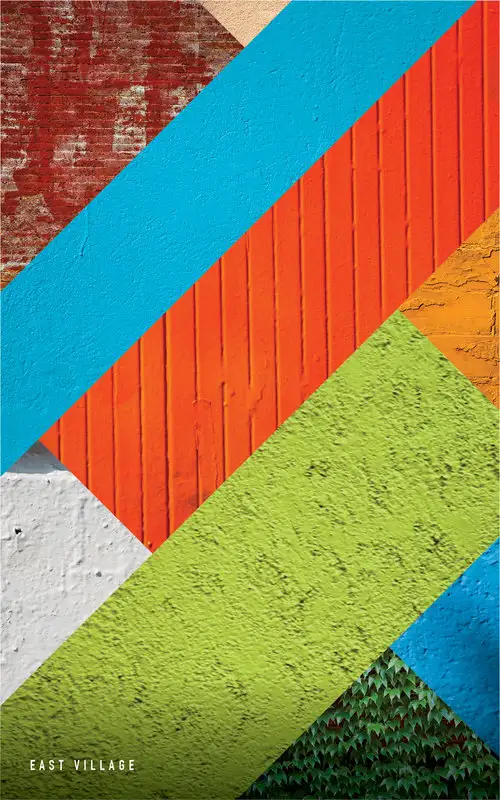
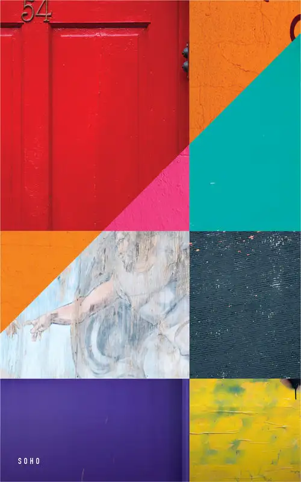
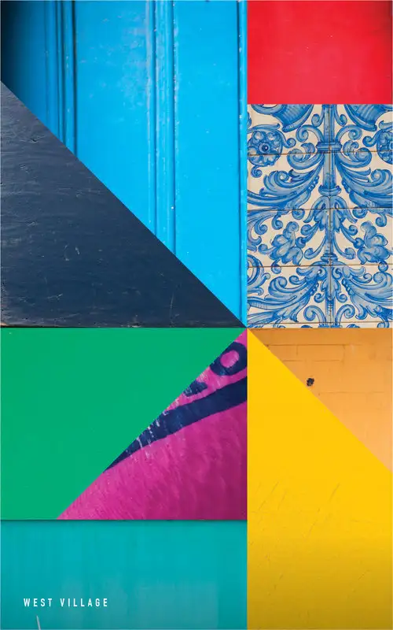
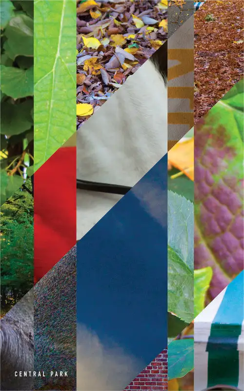
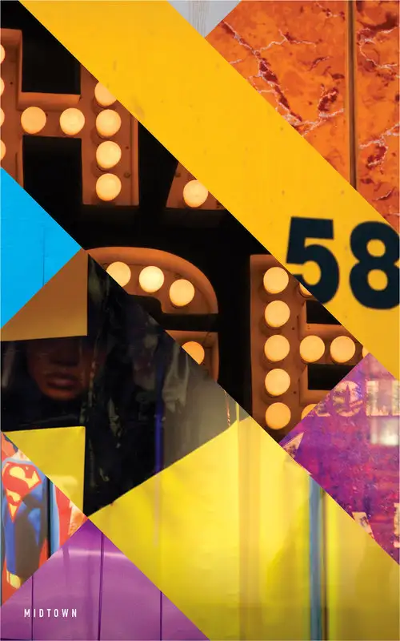
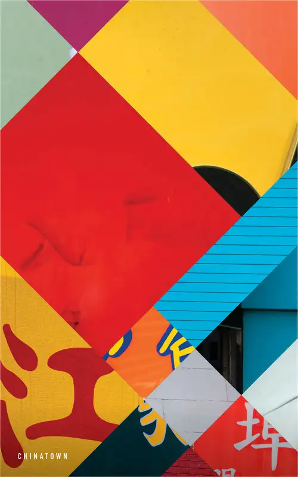
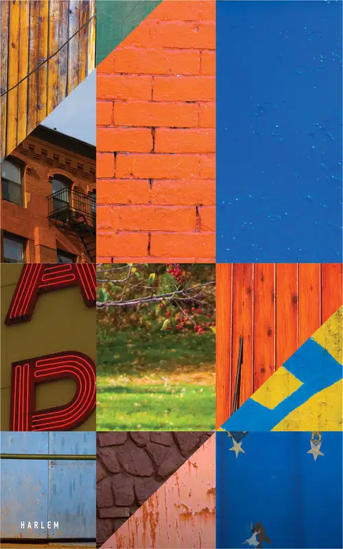

HERO IMAGE // COLOR STUDY
HERO IMAGE // TEXTURE STUDY

MICROSITE // NEIGHBORHOOD INDEX

MICROSITE // COLOR GRID

EAST VILLAGE

SOHO
FINANCIAL DISTRICT

WEST VILLAGE

CENTRAL PARK

MIDTOWN

CHINATOWN

HARLEM